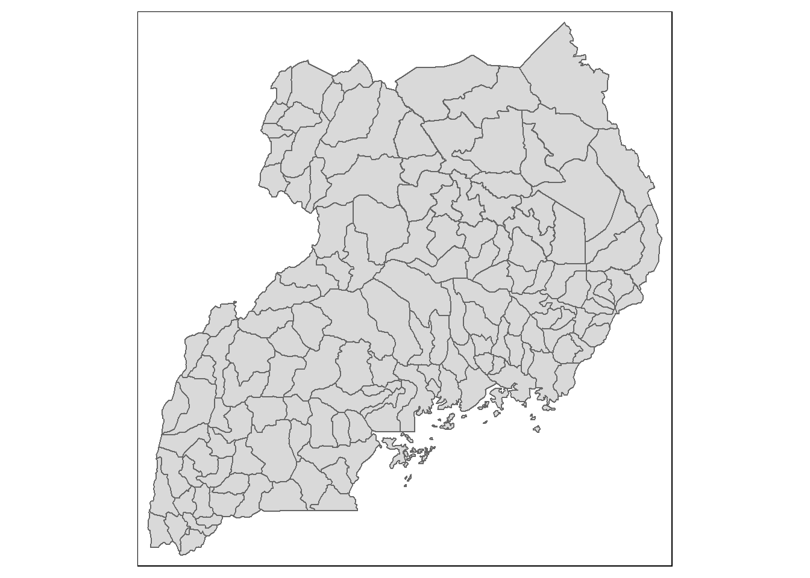
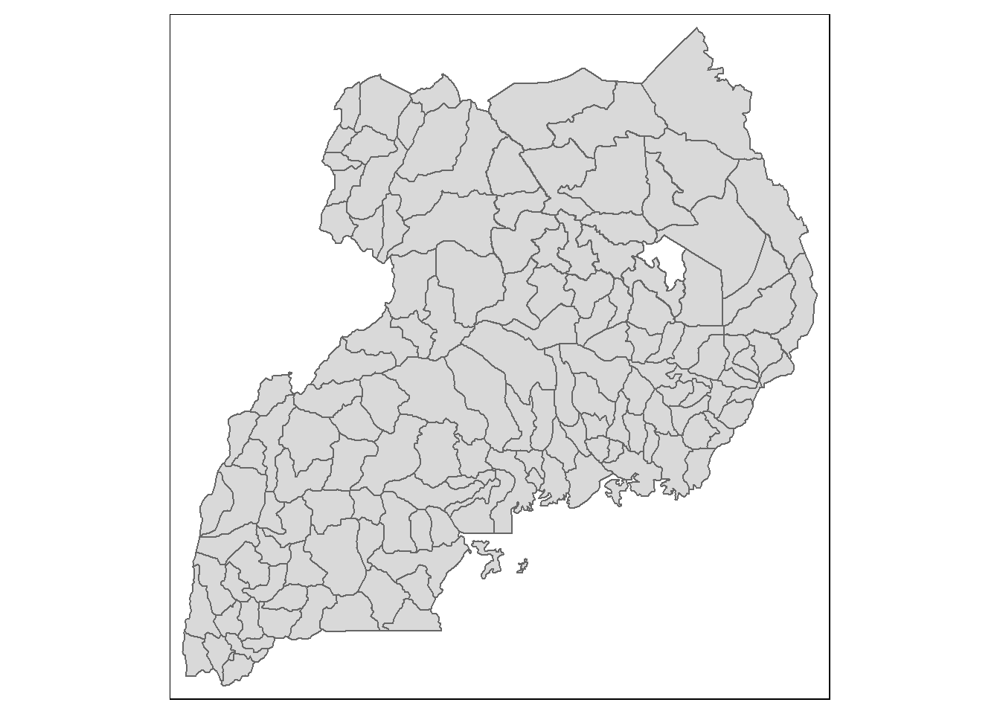

pacman::p_load(olsrr, corrplot, ggpubr, sf, spdep, GWmodel, tmap, tidyverse, gtsummary)Take Home Exercise 3a: Modelling Geography of Financial Inclusion with Geographically Weighted Methods
1. Introduction
According to Wikipedia, financial inclusion is the availability and equality of opportunities to access financial services. It refers to processes by which individuals and businesses can access appropriate, affordable, and timely financial products and services - which include banking, loan, equity, and insurance products. It provides paths to enhance inclusiveness in economic growth by enabling the unbanked population to access the means for savings, investment, and insurance towards improving household income and reducing income inequality.
2. The Task
In this take-home exercise, we are required to build an explanatory model to determine factors affecting financial inclusion by using geographical weighted regression methods.
3. The Data
For the purpose of this take-home exercise, two data sets shall be used, they are:
The district level boundary GIS data can be downloaded from geoBoundaries portal
4. Importing Packages
Before we start the exercise, we will need to import necessary R packages first. We will use the following packages:
olsrr package for building OLS and performing diagnostics tests
GWmodel package for calibrating geographical weighted family of models
corrplot package for multivariate data visualisation and analysis
sf package provides functions to manage, processing, and manipulate Simple Features, a formal geospatial data standard that specifies a storage and access model of spatial geometries such as points, lines, and polygons.
tmap which provides functions for plotting cartographic quality static point patterns maps or interactive maps by using leaflet API.
Use the code chunk below to install and launch the below R packages.
5. Getting the Data Into R Environment
5.1 Importing geospatial data
The geospatial data used in this hands-on exercise is called geoBoundaries-UGA-ADM2. It is in ESRI shapefile format. The shapefile consists of Uganda district level boundaries. Polygon features are used to represent these geographic boundaries. The GIS data is in svy21 projected coordinates systems.
The code chunk below is used to import geoBoundaries-UGA-ADM2 shapefile by using st_read() of sf packages.
# Load district level boundary GIS data
boundaries2 <- st_read(dsn = "data/rawdata/geoBoundaries-UGA-ADM2-all",
layer = "geoBoundaries-UGA-ADM2")Reading layer `geoBoundaries-UGA-ADM2' from data source
`C:\Users\user\OneDrive - Singapore Management University\MITB\6. Geospatial Analytics and Applications\jeffleesl\ISSS626-GAA\Take-Home_Ex\Take-Home_Ex03\data\rawdata\geoBoundaries-UGA-ADM2-all'
using driver `ESRI Shapefile'
Simple feature collection with 151 features and 5 fields
Geometry type: MULTIPOLYGON
Dimension: XY
Bounding box: xmin: 29.56838 ymin: -1.4732 xmax: 35.02676 ymax: 4.228399
Geodetic CRS: WGS 845.1.1 Updating CRS Information
Uganda is located in southeast Africa between 1º S and 4º N latitude, and between 30º E and 35º E longitude.
The code chunk below updates the newly imported mpsz with the correct ESPG code (i.e. 32736 or 21096).
# Transform to the correct ESPG Code
boundaries <- st_transform(boundaries2, 32736)# Verify the newly transformed boundaries
st_crs(boundaries)Coordinate Reference System:
User input: EPSG:32736
wkt:
PROJCRS["WGS 84 / UTM zone 36S",
BASEGEOGCRS["WGS 84",
ENSEMBLE["World Geodetic System 1984 ensemble",
MEMBER["World Geodetic System 1984 (Transit)"],
MEMBER["World Geodetic System 1984 (G730)"],
MEMBER["World Geodetic System 1984 (G873)"],
MEMBER["World Geodetic System 1984 (G1150)"],
MEMBER["World Geodetic System 1984 (G1674)"],
MEMBER["World Geodetic System 1984 (G1762)"],
MEMBER["World Geodetic System 1984 (G2139)"],
ELLIPSOID["WGS 84",6378137,298.257223563,
LENGTHUNIT["metre",1]],
ENSEMBLEACCURACY[2.0]],
PRIMEM["Greenwich",0,
ANGLEUNIT["degree",0.0174532925199433]],
ID["EPSG",4326]],
CONVERSION["UTM zone 36S",
METHOD["Transverse Mercator",
ID["EPSG",9807]],
PARAMETER["Latitude of natural origin",0,
ANGLEUNIT["degree",0.0174532925199433],
ID["EPSG",8801]],
PARAMETER["Longitude of natural origin",33,
ANGLEUNIT["degree",0.0174532925199433],
ID["EPSG",8802]],
PARAMETER["Scale factor at natural origin",0.9996,
SCALEUNIT["unity",1],
ID["EPSG",8805]],
PARAMETER["False easting",500000,
LENGTHUNIT["metre",1],
ID["EPSG",8806]],
PARAMETER["False northing",10000000,
LENGTHUNIT["metre",1],
ID["EPSG",8807]]],
CS[Cartesian,2],
AXIS["(E)",east,
ORDER[1],
LENGTHUNIT["metre",1]],
AXIS["(N)",north,
ORDER[2],
LENGTHUNIT["metre",1]],
USAGE[
SCOPE["Navigation and medium accuracy spatial referencing."],
AREA["Between 30°E and 36°E, southern hemisphere between 80°S and equator, onshore and offshore. Burundi. Eswatini (Swaziland). Kenya. Malawi. Mozambique. Rwanda. South Africa. Tanzania. Uganda. Zambia. Zimbabwe."],
BBOX[-80,30,0,36]],
ID["EPSG",32736]]st_bbox(boundaries) #view extent xmin ymin xmax ymax
117997.3 9836930.8 725449.1 10467443.7 tm_shape(boundaries) +
tm_polygons()
## Convert to multipolygon to individual polygon
boundaries_sf <- boundaries %>%
st_cast("POLYGON") %>%
mutate(area = st_area(.))Warning in st_cast.sf(., "POLYGON"): repeating attributes for all
sub-geometries for which they may not be constant## Group by the unique name and select the largest polygon by area
boundaries_cleaned <- boundaries_sf %>%
group_by(shapeName) %>%
filter(area == max(area)) %>%
ungroup() %>%
select(-area) %>%
select(shapeName) %>%
rename(
county_name = shapeName
)tm_shape(boundaries_cleaned) +
tm_polygons()
5.2 Importing the aspatial data, FinScope Uganda
The FinScope-2023_Dataset_Final is in csv file format. The codes chunk below uses read_csv() function of readr package to import FinScope-2023_Dataset_Final into R as a tibble data frame called uganda_data.
uganda_data <- read_csv("data/rawdata/FinScope-2023_Dataset_Final.csv")Warning: One or more parsing issues, call `problems()` on your data frame for details,
e.g.:
dat <- vroom(...)
problems(dat)Rows: 3176 Columns: 686
── Column specification ────────────────────────────────────────────────────────
Delimiter: ","
chr (25): HH_ID, Interview_ID, ea_name, District, Region, Subregion, Rural_...
dbl (638): ea_code, age, disabled, Pweight, Lhhid, Enum_code, InterviewDate,...
lgl (23): f3_2_14, f3_2_15, f3_3_14, f3_3_15, f3_5_14, f3_5_15, g12_2_1, g1...
ℹ Use `spec()` to retrieve the full column specification for this data.
ℹ Specify the column types or set `show_col_types = FALSE` to quiet this message.5.2.1 Variables to Consider for Financial Inclusion
Check the column names in the uganda_data to identify the right names.
colnames(uganda_data) # Displays all column names in the datasetTo determine factors affecting financial inclusion, consider including the following types of variables:
Age and Age Band
Gender
Education Level
Mobile User
Income Level
Employment Status
- Urban vs. rural status
- Distance to nearest bank or financial institution from Home (Commerical Nank, SACCO and Mobile Money)
Financial Advice
Save Money and the channel (Commerical Nank, SACCO and Mobile Money)
Last amount saved
Borrow Money and the channel (Commerical Nank, SACCO and Mobile Money)
Last amount borrowed
Last amount sent
Last amount received
Documentation for KYC (National Identification Card, Passport, Utilities and Pay Slip)
Self Sustaining
uganda_data_new <- uganda_data %>%
select(-c(2:4, 6:7, 9, 11:17, 20, 23:28, 30:34, 36:37, 40:43, 45:63, 65, 67:90, 93:94, 96, 98:167, 169:230, 232:234, 236:238, 240:241, 243:342, 344:364, 366:384, 386:438, 440:444, 446, 448:674, 677:679, 681:686)) %>%
rename(
age_band = c1,
gender = c2,
education_level = c4,
employment_status = c5,
mobile_user = c7_1_1,
national_ic_doc = c8_1a,
passport_doc = c8_1d,
utilities_bill_doc = c8_1e,
pay_slip_doc = c8_1j,
self_sustaining = e1_1,
financial_advice = e3_1,
save_money = f2_1,
save_money_commercial_bank = f3_1_1,
save_money_SACCO = f3_1_4,
save_money_mobile_money = f3_1_6,
last_amt_saved = f6_1,
last_amt_borrowed = g3_3,
borrow_money_commercial_bank = g6_1_1,
borrow_money_SACCO = g6_1_5,
borrow_money_mobile_money = g6_1_8,
last_amt_sent = hpp3_2,
last_amt_received = hpp6_2,
own_insurance = j1,
distance_commerical_bank = k1_1_1,
distance_SACCOS = k1_1_7,
distance_mobile_money = k1_1_9,
latitude = hh_gps_latitude,
longitude = hh_gps_longitude,
county_name = s1aq2b
)head(uganda_data_new$longitude) #see the data in XCOORD column[1] 33.65414 33.65328 33.65403 33.65586 33.65472 33.65549head(uganda_data_new$latitude) #see the data in YCOORD column[1] 2.677662 2.675690 2.673339 2.671343 2.671923 2.672423Next, summary() of base R is used to display the summary statistics of uganda_data tibble data frame.
summary(uganda_data_new) HH_ID age Region Rural_Urban
Length:3176 Min. : 16.00 Length:3176 Length:3176
Class :character 1st Qu.: 25.00 Class :character Class :character
Mode :character Median : 34.00 Mode :character Mode :character
Mean : 37.86
3rd Qu.: 48.00
Max. :100.00
age_band gender education_level employment_status
Min. :1.000 Min. :1.000 Min. :1.000 Min. : 1.00
1st Qu.:3.000 1st Qu.:1.000 1st Qu.:2.000 1st Qu.: 1.00
Median :4.000 Median :2.000 Median :3.000 Median : 2.00
Mean :3.986 Mean :1.552 Mean :3.169 Mean : 3.67
3rd Qu.:5.000 3rd Qu.:2.000 3rd Qu.:4.000 3rd Qu.: 5.00
Max. :7.000 Max. :2.000 Max. :9.000 Max. :99.00
mobile_user national_ic_doc passport_doc utilities_bill_doc
Min. :1.000 Min. :1.000 Min. :1.00 Min. :1.000
1st Qu.:1.000 1st Qu.:1.000 1st Qu.:2.00 1st Qu.:2.000
Median :1.000 Median :1.000 Median :2.00 Median :2.000
Mean :1.273 Mean :1.171 Mean :1.96 Mean :1.926
3rd Qu.:2.000 3rd Qu.:1.000 3rd Qu.:2.00 3rd Qu.:2.000
Max. :2.000 Max. :2.000 Max. :2.00 Max. :2.000
pay_slip_doc self_sustaining financial_advice save_money
Min. :1.000 Min. :1.000 Min. :1.000 Min. :1.00
1st Qu.:2.000 1st Qu.:2.000 1st Qu.:1.000 1st Qu.:1.00
Median :2.000 Median :2.000 Median :1.000 Median :1.00
Mean :1.964 Mean :1.846 Mean :1.401 Mean :1.36
3rd Qu.:2.000 3rd Qu.:2.000 3rd Qu.:2.000 3rd Qu.:2.00
Max. :2.000 Max. :2.000 Max. :2.000 Max. :2.00
save_money_commercial_bank save_money_SACCO save_money_mobile_money
Min. :1.000 Min. :1.000 Min. :1.000
1st Qu.:2.000 1st Qu.:2.000 1st Qu.:1.000
Median :2.000 Median :2.000 Median :2.000
Mean :1.837 Mean :1.842 Mean :1.591
3rd Qu.:2.000 3rd Qu.:2.000 3rd Qu.:2.000
Max. :2.000 Max. :2.000 Max. :2.000
NA's :1143 NA's :1143 NA's :1143
last_amt_saved last_amt_borrowed borrow_money_commercial_bank
Min. :1.000 Min. : 1.00 Min. :1.000
1st Qu.:1.000 1st Qu.: 1.00 1st Qu.:2.000
Median :1.000 Median : 2.00 Median :2.000
Mean :2.198 Mean : 88.72 Mean :1.899
3rd Qu.:3.000 3rd Qu.: 3.00 3rd Qu.:2.000
Max. :9.000 Max. :998.00 Max. :2.000
NA's :1143 NA's :1877 NA's :2629
borrow_money_SACCO borrow_money_mobile_money last_amt_sent
Min. :1.00 Min. :1.000 Min. : 1.00
1st Qu.:2.00 1st Qu.:2.000 1st Qu.: 1.00
Median :2.00 Median :2.000 Median : 1.00
Mean :1.87 Mean :1.832 Mean : 65.63
3rd Qu.:2.00 3rd Qu.:2.000 3rd Qu.: 2.00
Max. :2.00 Max. :2.000 Max. :998.00
NA's :2629 NA's :2629 NA's :1762
last_amt_received own_insurance distance_commerical_bank distance_SACCOS
Min. : 1.00 Min. :1.000 Min. :1.000 Min. :1.000
1st Qu.: 1.00 1st Qu.:2.000 1st Qu.:2.000 1st Qu.:2.000
Median : 1.00 Median :2.000 Median :4.000 Median :2.000
Mean : 80.83 Mean :1.974 Mean :3.176 Mean :2.508
3rd Qu.: 3.00 3rd Qu.:2.000 3rd Qu.:4.000 3rd Qu.:4.000
Max. :998.00 Max. :2.000 Max. :4.000 Max. :4.000
NA's :1489
distance_mobile_money latitude longitude county_name
Min. :1.000 Min. :-1.4128 Min. : 0.00 Length:3176
1st Qu.:1.000 1st Qu.: 0.2393 1st Qu.:30.99 Class :character
Median :1.000 Median : 0.7726 Median :32.54 Mode :character
Mean :1.655 Mean : 0.9945 Mean :31.53
3rd Qu.:2.000 3rd Qu.: 1.9143 3rd Qu.:33.52
Max. :4.000 Max. : 3.6876 Max. :34.96
5.3 Converting aspatial data frame into a sf object
Currently, the uganda_data_new tibble data frame is aspatial. We will convert it to a sf object. The code chunk below converts uganda_data_new data frame into a simple feature data frame by using st_as_sf() of sf packages.
uganda_data.sf <- st_as_sf(uganda_data_new,
coords = c("longitude", "latitude"),
crs=4326) %>%
st_transform(crs=32736)Notice that st_transform() of sf package is used to convert the coordinates from wgs84 (i.e. crs:4326) to Arc 1960 (i.e. crs=32736).
Next, head() is used to list the content of condo_resale.sf object.
head(uganda_data.sf)Simple feature collection with 6 features and 31 fields
Geometry type: POINT
Dimension: XY
Bounding box: xmin: 572616.1 ymin: 10295290 xmax: 572903.6 ymax: 10295980
Projected CRS: WGS 84 / UTM zone 36S
# A tibble: 6 × 32
HH_ID age Region Rural_Urban age_band gender education_level
<chr> <dbl> <chr> <chr> <dbl> <dbl> <dbl>
1 001001 32 NORTHERN Urban 4 2 6
2 001019 37 NORTHERN Urban 4 2 2
3 001028 25 NORTHERN Urban 3 2 1
4 001037 32 NORTHERN Urban 4 1 2
5 001040 40 NORTHERN Urban 4 2 3
6 001047 16 NORTHERN Urban 1 1 2
# ℹ 25 more variables: employment_status <dbl>, mobile_user <dbl>,
# national_ic_doc <dbl>, passport_doc <dbl>, utilities_bill_doc <dbl>,
# pay_slip_doc <dbl>, self_sustaining <dbl>, financial_advice <dbl>,
# save_money <dbl>, save_money_commercial_bank <dbl>, save_money_SACCO <dbl>,
# save_money_mobile_money <dbl>, last_amt_saved <dbl>,
# last_amt_borrowed <dbl>, borrow_money_commercial_bank <dbl>,
# borrow_money_SACCO <dbl>, borrow_money_mobile_money <dbl>, …